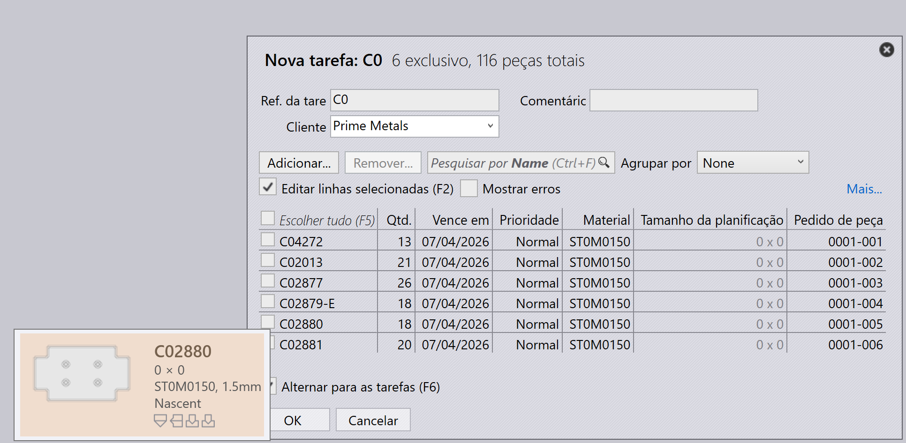
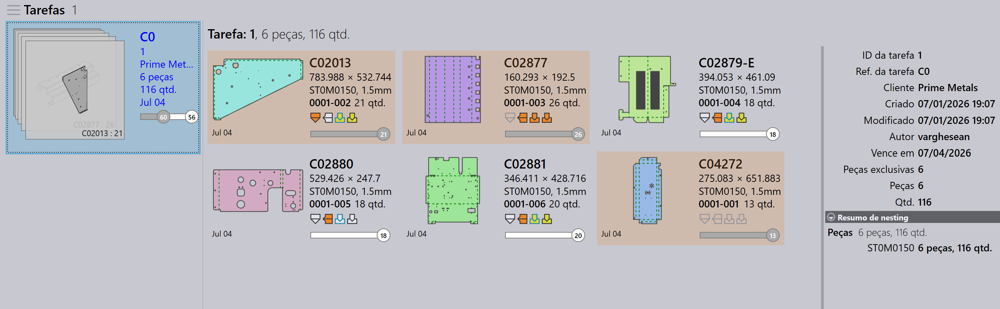
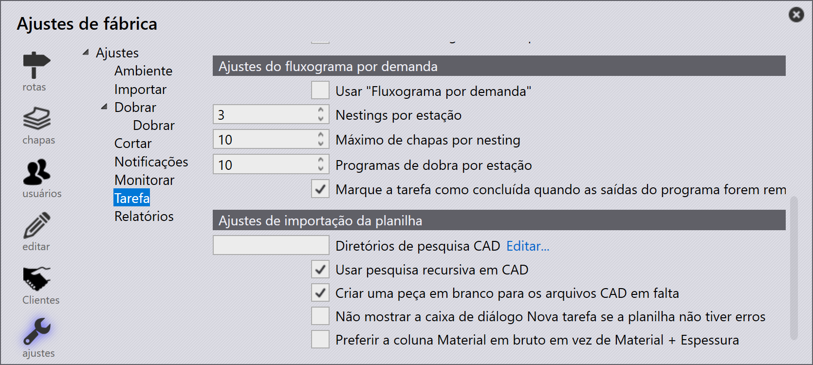
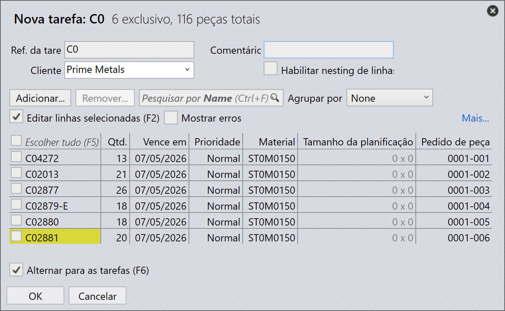
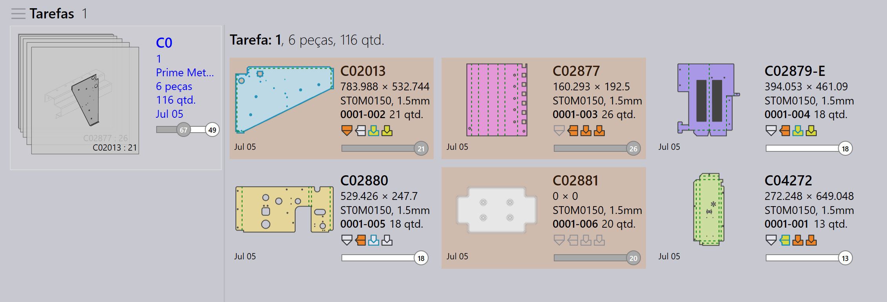
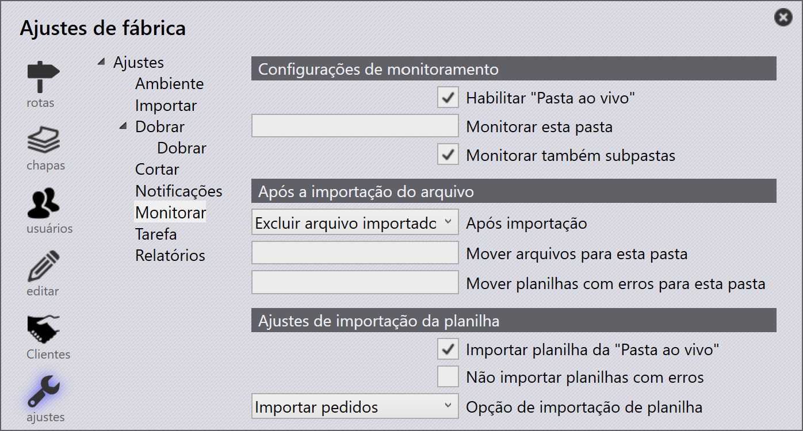
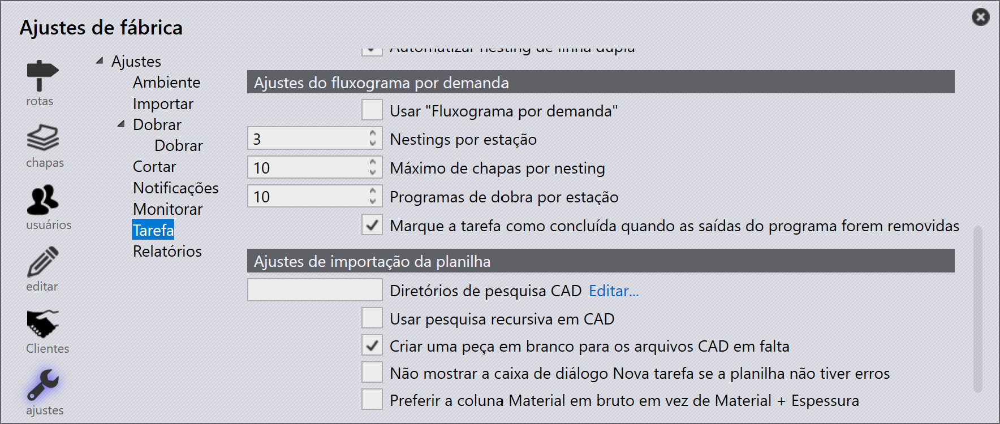
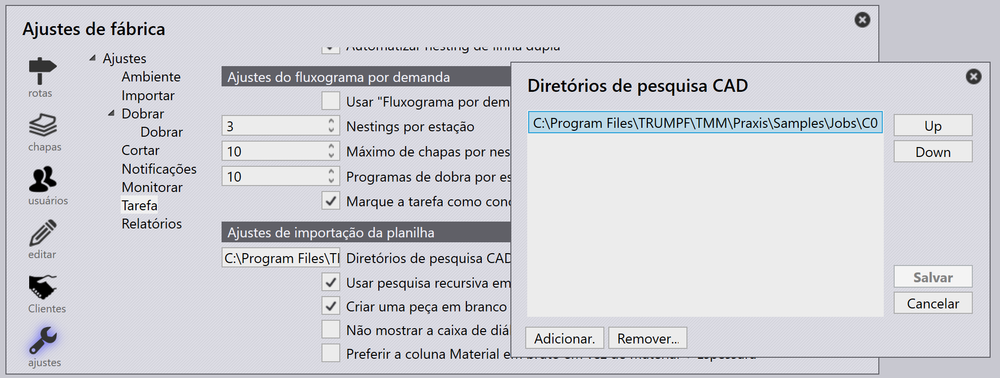

Importar tarefas
Importar de csv ou xlsx
Você também pode importar tarefas em formatos de texto comuns
-
Clique em File → Open → Importar tarefas, o diálogo Open Folder é exibido. Selecione
C:\Program Files\Metamation\Praxis\Samples\Jobs\C0\C0.csv.
-
Se todas as peças existirem no local do csv ou nas pastas de diretórios de consulta, a janela nova tarefa aparece listando todas as peças que correspondem aos campos do csv.
-
Peças ausentes são ignoradas e não aparecem na janela nova tarefa.
-
Inicialmente o status da peça é Nascent.

-
Clique em OK, agora as peças são importadas na Biblioteca de Peças. A validação CAD, ferramental para instâncias de dobra e corte são realizados, o que pode ser monitorado na tela do Pmonitor.

Criar uma peça em branco para os arquivos CAD em falta
Ao importar tarefas usando uma planilha (.csv ou .xlsx), você pode às vezes ter linhas referenciando arquivos CAD que não estão disponíveis no sistema.
-
Para lidar com isso, vá em fábrica → Ajustes → Tarefa, em Importar planilha habilite Criar uma peça em branco para os arquivos CAD em falta

Quando esta opção está selecionada:
-
Se um arquivo CAD estiver ausente para qualquer linha durante a importação da tarefa, o sistema criará automaticamente uma peça em branco no lugar do arquivo CAD ausente.
-
Na janela nova tarefa, essas peças ausentes são visualmente destacadas em amarelo para indicar que o arquivo CAD associado está ausente.

-
A peça ausente ainda terá seus campos mapeados (como nome da peça, material, espessura, quantidade, etc.) do CSV. No entanto, o estado da peça será mostrado como Nascent, significando que é apenas um espaço reservado vazio sem geometria real ainda.

Isso garante que a importação da tarefa ainda possa prosseguir sem erros devido a arquivos CAD ausentes — você pode posteriormente atualizar ou substituir a peça em branco pelo arquivo CAD correto quando estiver disponível.
Não mostrar a caixa de diálogo Nova tarefa se a planilha não tiver erros
fábrica → Ajustes → Tarefa → Importar planilha→ Não mostrar a caixa de diálogo Nova tarefa se a planilha não tiver erros
-
Quando esta caixa de seleção está marcada, o sistema cria automaticamente a nova tarefa sem mostrar o diálogo New Job se a planilha não tiver erros (sem peças ausentes, datas ausentes ou dados inválidos).
-
Quando esta caixa de seleção está desmarcada, o diálogo New Job sempre aparece para revisão e confirmação do usuário, mesmo que a planilha não tenha erros.
Prefer raw-material column over material + thickness
fábrica → Ajustes → Tarefa→Prefer Raw-Material column over Material + Thickness
-
Quando esta caixa de seleção está marcada, o sistema espera que a planilha use a coluna Raw-Material (por exemplo, Steel-20). Isso significa que o tipo de material e a espessura devem ser combinados em um único valor em uma coluna.
-
Quando esta caixa de seleção está desmarcada, o sistema espera que a planilha tenha colunas separadas para Material e Thickness (por exemplo, Steel e 2.00). O sistema os combina internamente durante a importação.

Pasta monitorada usando CSV/XLSX
-
Em fábrica → Ajustes→ Monitorar marque Habilitar "Pasta ao vivo" e Monitorar também subpastas.
-
Defina o caminho da pasta monitorada (UNC ou unidade mapeada).
-
Em Importar planilha, marque Importar planilha da "Pasta ao vivo".

-
Selecione Importar tarefas nas opções de Spreadsheet Import.
-
Copie
C:\Program Files\Metamation\Praxis\Samples\Jobs\C0\C0.csve cole na pasta monitorada. -
O sistema verifica o CSV e tenta criar a tarefa automaticamente.
-
Se o arquivo CAD estiver ausente, nenhuma tarefa é criada porque os dados CAD necessários não foram encontrados.
Diretório de consulta CAD e pesquisa CAD recursiva - não configurado
-
Em fábrica → Ajustes → Tarefa → Importar planilha, se nenhum CAD lookup directories estiver definido e Usar pesquisa recursiva em CAD não for usado, o sistema não pesquisa arquivos CAD automaticamente.
-
Se a caixa de seleção Criar uma peça em branco para os arquivos CAD em falta estiver marcada, a tarefa ainda será criada mesmo quando arquivos CAD estiverem ausentes.
-
Neste caso, todas as peças na tarefa serão criadas como peças nascent (em branco) — significando que não possuem geometria porque os arquivos CAD não foram encontrados.

Diretório de consulta CAD e pesquisa CAD recursiva - configurado
Quando Diretórios de pesquisa CAD está definido para (C:\Program Files\Metamation\Praxis\Samples) e Usar pesquisa recursiva em CAD está habilitado em fábrica → Ajustes → Tarefa → Importar planilha:
-
O sistema pesquisa automaticamente a pasta especificada e todas as suas subpastas para os arquivos CAD necessários mencionados na planilha.
-
Criar uma peça em branco para os arquivos CAD em falta também está habilitado, então se algum arquivo CAD ainda não for encontrado, o sistema criará uma peça em branco como espaço reservado.
